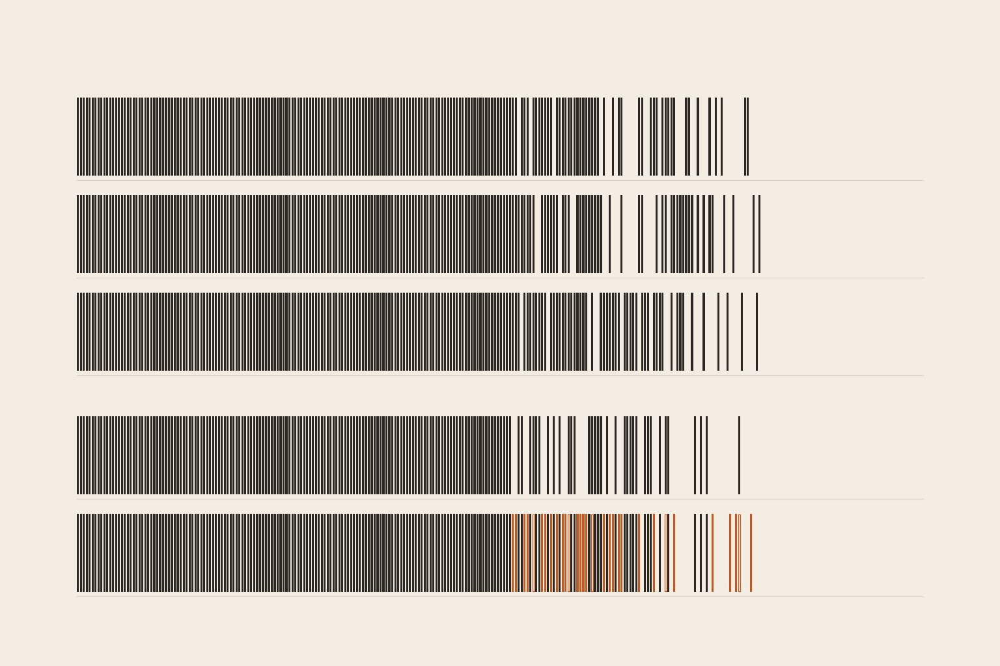
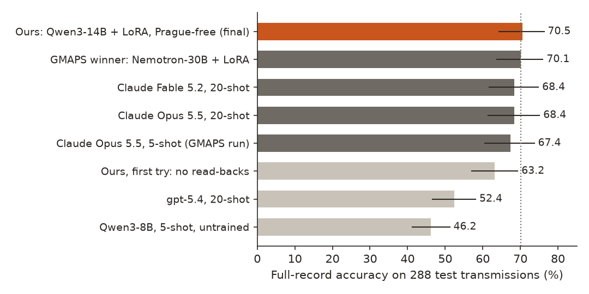
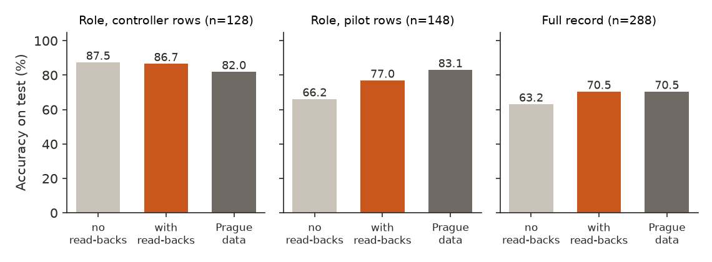
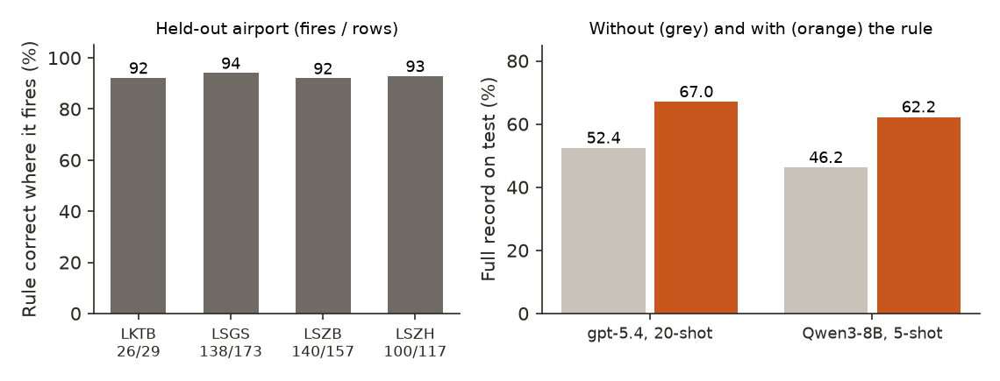

← Research·Experiments·
An open 14B model matches a hackathon-winning air traffic parser on unseen airports, and beats neither it nor Claude
A runner-up at a fine-tuning hackathon turned tower radio into structured records and tied Claude Opus. This note rebuilds it from public data, removes the training data that came from one of its test airports, and asks whether an open model can still match it, and beat the frontier.

Summary: the short answer and the key results
In short
Can an open model, trained without any data from the test airports, match or beat the hackathon winner and the frontier at parsing tower radio?
It matches them; it beats neither. A Qwen3-14B fine-tuned on free Kaggle GPUs gets the whole record right (speaker role, callsigns and the set of instructions) on 70.5% of the 288 test transmissions from Sydney, Prague and Bratislava. The GMAPS winner scores 70.1%, Claude Fable 5.2 and Claude Opus 5.5 68.4% with 20 examples: all within noise (+0.3 to +2.1 points, p = 0.42 to 1.0). The winner had trained on Prague tower recordings; ours never saw Prague. Removing that corpus first cost us 7 points, almost all on telling a pilot from a controller, and 1,837 pilot read-backs written by a rule from controller instructions won them back (+7.3 points, significant). The test was looked at twice for this model line, and both looks are reported.
Key results
| What we tested | Result | Compared with |
|---|---|---|
| Does the Prague-free model beat the winner and the frontier? (288 test transmissions) | No, it matches them: 70.5% [64.3, 76.3]; +0.3 vs the winner (p = 1.0), +2.1 vs Fable 5.2 (p = 0.42, [−2.1, +6.3]) and vs Opus 5.5 (p = 0.47) | GMAPS winner 70.1%; Claude Fable 5.2 and Opus 5.5, 20-shot, 68.4% |
| What did dropping the Prague corpus cost, and what won it back? | 7.3 points, all regained by rule-written pilot read-backs: 63.2% → 70.5% (26 transmissions fixed, 5 broken, p = 0.0002, [+3.7, +11.1]); pilot-row role accuracy 66% → 77% | Our pilot model trained with the Prague corpus: 70.5% (21 vs 21 discordant) |
| Does the GMAPS result replicate? | Yes. Our split and scorer reproduce all 20 of its published test scores exactly; our own Opus 5.5 run lands within 0.4 points of its run (8 vs 7 discordant) | Its published 70.1% and 67.4% |
| Why do GPT models score so low? | They read pilot read-backs as instructions: gpt-5.4 with 20 examples names the speaker right on 65% of transmissions and gets 52.4% of whole records | A three-line rule (callsign first: controller; last: pilot) lifts it to 67.0% (+14.6, p < 10⁻⁶) |
| Did retraining on its own correct answers help? | No. 84.7% against 85.9% on dev; 2,313 of 2,341 training rows were already solved | The read-back model before it |
01Introduction
“Descending to flight level two seven zero, Alitalia one one seven.” A controller would never say this; a pilot says it every few minutes, reading back an instruction with the callsign at the end. A parser that turns radio into records has to know who is talking: a runway clearance from a controller is an authorisation, the same words from a pilot are an acknowledgement. Most of what separates the systems in this note is that one decision.
What is known. At the Fireworks: Deploy hackathon (November 2026) the runner-up, GMAPS, fine-tuned an open Nemotron-30B to parse single tower transmissions into {role, callsigns, commands, values} and scored 70.1% full-record accuracy on 288 transmissions from three airports it held out of training, a statistical tie with Claude Opus 5.5 (67.4%). It published its split, its scorer and every prediction. The test comes from the ATCO2 test set, real recordings from seven airports with gold annotations by the dataset’s authors.
What is missing. Two things. The winner’s training mix includes UWB-ATCC, a corpus recorded at Prague’s Ruzyne tower, and Prague is one of the three test airports: “airports it never saw” holds for the recordings, not for the airport. And the claim was a tie, not a win: nobody has asked whether a different recipe, a stronger base or a harness on a frontier model gets clearly past 70%.
Without any data from the test airports, does an open model trained on free or cheap compute match the 70.1% winner, and does any system we can build beat both it and the best frontier model under the same conditions?
What this note does. Its contributions:
- A replication: the split and scorer rebuilt from the project’s description reproduce its 20 published scores exactly, and our own frontier runs land on its numbers.
- A Prague-free model that matches the winner and the frontier on the same 288 transmissions, trained on Kaggle’s free GPUs.
- The cause of the gap a Prague-free mix opens (the missing pilot speech, not Prague’s phrasing) and a rule-based fix worth 7.3 points.
- A three-line role rule that lifts gpt-5.4 by 14.6 points, checked on airports it was not fitted on.
- Everything tried that did not help, and the code to rerun it.
What would count as an answer. Set before the test runs:
- Every choice (base model, data mix, epoch, harness) is made on the 85 dev transmissions from the training airports; each final system runs on test once (section 4.4 reports the one exception).
- “Beats” needs both a paired McNemar test (p < 0.05) and a 95% recording-cluster bootstrap interval above zero; anything else is “not significantly different”.
- The scorer is checked first: it must reproduce the published scores of the project being compared against.
- The final model’s training data comes only from the training airports, an open-weight teacher, our own rule-based generators and the model’s own outputs: no data from the test airports and no output of a Claude or GPT model. (Two earlier pilot models were labelled with gpt-5.4-mini and trained with the Prague corpus; they are marked wherever they appear.)
02Setup
2.1 The task and the metric
Input: one transmission as a speech recogniser would write it, plus the facility it was heard on. Output: JSON with the speaker’s role (controller or pilot), the callsigns, the instruction phrases (“cleared to land”, “line up and wait”) and their values (“runway two five”), all copied word for word.
The headline metric is full-record accuracy: a transmission counts only if the role is right, the callsigns match exactly, and the set of instructions matches. Instruction phrases are mapped to about twenty canonical actions (cleared to land, hold short, contact frequency and so on) by an ordered rule table, and acknowledgements and unmapped phrases are ignored on both sides, as the GMAPS project defined it. A transmission whose gold role is unknown (12 of 288) is not scored on role. Intervals are 95% bootstraps that resample whole recordings: the 288 transmissions come from 159 recordings, and transmissions in one recording share a channel and speakers.
2.2 Data: the split, and the Prague problem
| Set | Size | Used for |
|---|---|---|
| ATCO2 test (Sydney, Prague, Bratislava) | 288 transmissions, 159 recordings | Test only; hash frozen before any model saw it |
| ATCO2 dev (every 7th transmission of the four training airports: Bern, Sion, Zurich, Brno) | 85 | Every choice |
| ATCO2 train (the rest of those four airports) | 504 | Training (repeated 3×) and few-shot examples |
| ATCOSIM (simulated en-route controller speech) | 2,872 used | Training; labelled by Qwen3.5-397B, kept only if every span is verbatim |
| Synthetic US phraseology (our grammar) | 2,500 | Training; gold by construction |
| Pilot read-backs (our rule, from controller rows) | 1,837 | Training; gold by construction |
| UWB-ATCC (Prague Ruzyne tower and approach) | 0 in the final model | Pilot models only: used by the winner, removed here |
The test is pilot-heavy (148 pilot, 128 controller, 12 unknown); the training airports are controller-heavy, and ATCOSIM is controller speech only. UWB-ATCC was the only real pilot speech in the winner’s mix, and it comes from a test airport.
2.3 Models
The final model is Qwen3-14B, 4-bit, with a rank-32 LoRA trained with Unsloth on one free Kaggle T4. Earlier models (Nemotron-3.5-Lightning-30B and Qwen3-8B) were trained on Tinker. Frontier rivals ran through their providers’ APIs with the same prompt and the first 5 or 20 training transmissions as worked examples; their reasoning effort was chosen on dev (medium for Claude Opus 5.5, Fable 5.2 and gpt-5.4).
03How the study was run
- Replicate: rebuild the split (504 / 85 / 288, 159 test recordings), freeze the test hash, and check the scorer reproduces the project’s 20 published test scores and its paired statistics.
- Pilot (the winner’s kind of data mix, Prague corpus included): Qwen3-8B and Nemotron-30B LoRAs on Tinker; GPT and Qwen baselines; 12 test runs.
- Frontier under identical conditions: Claude Opus 5.5, Fable 5.1 and Fable 5.2 at 5 and 20 examples, effort chosen on dev; 6 test runs.
- Harness search on Claude (more or retrieved examples, voting over 5 samples, the previous transmission as context, the role rule), checked on dev and on 200 held-out training transmissions; nothing beat plain Opus, and none ran on test.
- Prague-free fine-tuning: ATCOSIM relabelled by an open-weight teacher; Nemotron-30B (Tinker) and Qwen3-14B (Kaggle) on the same mix; Qwen chosen on dev; test look 1.
- The fix: rule-based pilot read-backs; Qwen3-14B retrained; retraining on its own correct answers, which did not help on dev; the read-back model frozen with its adapter hash; test look 2.
| Fixed before any test run | Changed after reading results |
|---|---|
| The split, scorer and significance rule (McNemar and recording bootstrap, both required); dev as the only selection set; one test run per final system; no test-airport data in the final model; LoRA rank 32, learning rate 2e-4 | A second test look for the Prague-free line, taken after look 1 showed the gap (both reported); the read-back generator, written after look 1 and after reading dev role errors; a 200-transmission training check set for prompted systems, added when dev saturated at 88% to 90% |
Conditions: greedy decoding for open models (up to 200 new tokens); the providers’ default sampling for Claude and GPT. Spend at list prices: Tinker $25.84, Anthropic $26.38, OpenAI $9.44; Kaggle about 13.5 free GPU-hours.
04Results
4.1 The Prague-free model matches the winner and the frontier, and beats neither
Figure 1 shows the final model at 70.5%, the winner at 70.1% and the two Claude models at 68.4%; every interval overlaps the others by most of its width. In paired terms, the final model and the winner disagree on 33 transmissions (17 ours, 16 theirs, p = 1.0); against Fable 5.2 the split is 22 to 16 (p = 0.42, interval [−2.1, +6.3]); against Opus 5.5, 27 to 21 (p = 0.47). It is significantly better than gpt-5.4 with 20 examples (+18.1) and than untrained Qwen3-8B (+24.3, p < 10⁻⁸).

On the secondary metrics the top three are also close: clearance-state accuracy on the 69 runway-critical transmissions (did the record carry the right runway clearance?) 91.3% for ours, 88.4% for the winner, 89.9% for Fable 5.2; callsign F₁ 93.6%, 94.0% and 93.9%; speaker role 81.5%, 83.0% and 83.3%. Our model runs on a free T4; the Claude runs cost $3.66 (Fable 5.2) and $2.98 (Opus 5.5) per 1,000 transmissions at list prices.
4.2 The winner’s result replicates
Before any model ran, our split matched the project’s (504 / 85 / 288 transmissions, 159 test recordings, the same 288 ids), and our scorer, written from its README’s definitions, reproduced all 20 of its published test scores to the tenth of a point, along with its McNemar counts and bootstrap intervals (for example its Nemotron model against Opus: +2.8, 27 vs 19, p = 0.30, [−2.0, +7.4]). Our own runs then land on its numbers: Opus 5.5 with 5 examples 67.7% against its 67.4% (8 vs 7 discordant transmissions), and our pilot Nemotron-30B with the same kind of data mix 70.5% against its 70.1%. On the same Qwen3-8B base our pilot recipe scored 68.8% against its 59.7% (+9.0, p = 0.002); it differs in the labelling teacher (gpt-5.4-mini), roles taken from the corpus’s speaker labels and a larger LoRA, which we did not separate.
4.3 Dropping the Prague corpus cost 7 points; rule-written pilot read-backs won them back
The first Prague-free model (test look 1) scored 63.2%: 7.3 points below our pilot model trained with the Prague corpus (p = 0.004) and 6.9 below the winner (p = 0.004). Against Fable 5.2 with 20 examples it is 5.2 points lower, and not significantly lower under the both-tests rule (McNemar p = 0.049; recording bootstrap [+0.0, +10.4] for the Fable side). Figure 2 shows where the points went: role accuracy on pilot transmissions fell to 66%, while on controller transmissions it stayed at 88%. On dev, from the four training airports, a Nemotron-30B trained on the same Prague-free mix fell the same way (75.3% against 85.9% with the Prague corpus, p = 0.012), so the loss was not about Prague’s phrasing: UWB-ATCC was the only real pilot speech in the mix.
The fix writes pilot read-backs from controller instructions by a rule: each instruction in its pilot form (“descend to” becomes “descending to”; “contact” is dropped and the frequency kept), the values repeated, the callsign moved to the end, the role set to pilot, every span checked verbatim. 1,837 such rows, built from ATCOSIM and the training airports, replaced an earlier augmentation that had only moved callsigns. On dev the read-back model scored 85.9% against 81.2% (not significant, and not worse on any of the four airports); on test (look 2) it scored 70.5%, +7.3 over look 1, with 26 transmissions fixed and 5 broken (p = 0.0002, [+3.7, +11.1]), and pilot-row role accuracy up from 66% to 77%.

Pilot transmissions are still where the final model loses most (77% against 83% for the Prague-trained model), and controller transmissions are where it gains (87% against 82%). The table below splits the test by airport. The Prague-trained models do best on Prague (77.6% and 79.4%), but the Prague-free model is close behind there (76.6%), so the Prague corpus shows up as pilot speech more than as knowledge of Prague.
| System | Full record | Role |
|---|
Full-record and speaker-role accuracy by test airport (transmissions per airport on the buttons). Source: results/rows_test.json. Per-airport samples are small (79 to 107 transmissions): read these as descriptions, not tests.
4.4 The test set was looked at twice for this model line
The rule was one test run per final system. The Prague-free line got two. Look 1 scored the first Prague-free model (63.2%), and that score is what showed the pilot-speech gap the read-backs were written to close. Look 2 scored the final model after the read-back mix and the rejection-sampling stage were chosen on dev and its adapter hash was recorded. Because the fix was designed after look 1, look 2 is not blind to the test set in the way the pilot and frontier runs are: the read-backs were built only from training-airport and ATCOSIM rows and chosen on dev, but the idea came from a test result. Both looks are reported, and no other test runs were made on the Prague-free line.
4.5 A three-line role rule fixes most of GPT’s gap, and holds on airports it was not fitted on
The frontier’s weak point is the one ours had. gpt-5.4 with 20 examples names the speaker right on only 65% of test transmissions and gets 52.4% of whole records; Fable 5.1 with 5 examples falls to 68% role accuracy and 55.2%. A rule read off the 504 training transmissions (callsign first: controller; callsign last: pilot; otherwise keep the model’s answer) lifts gpt-5.4 to 67.0% (+14.6; 54 fixed and 12 broken, p < 10⁻⁶) and untrained Qwen3-8B from 46.2% to 62.2% (Figure 3, right).
The rule was conceived after reading the GPT baselines’ test errors, so we checked it where it was not fitted: fitted on three of the four training airports and scored on the fourth, it points the same way in every fold, fires on 80% to 90% of transmissions and is right on 92% to 94% of those (Figure 3, left). It does not help models that already learned the convention: Claude Opus 5.5 lost 3.5 points with it on dev, and our fine-tuned models gain nothing.

4.6 What did not help
| Idea | Where checked | Result |
|---|---|---|
| Opus 5.5 with 20 examples instead of 5 | 200 training transmissions | 78.0% vs 80.5% |
| Opus 5.5 with the 20 most similar training transmissions as examples | same | 77.5% vs 80.5% |
| Opus 5.5, majority over 5 samples | same | 79.5% vs 80.5%, at 5× the cost |
| Opus 5.5 with the previous transmission as context | same, and dev | 80.5% vs 80.5% (role +1.8) |
| Dropping predicted spans that are not in the transcript | dev, three systems | no full-record change |
| Qwen3.5-397B reasoning before it labels | dev | 50.6% vs 77.6% (answers cut off; 12× the cost) |
| Nemotron-30B instead of Qwen3-14B on the Prague-free mix | dev | 77.6% vs 81.2% |
| Retraining on the model’s own correct answers (8 samples per row) | dev | 84.7% vs 85.9% |
Reinforcement learning with the scorer as the reward (GRPO) was planned as a third stage and not run: rejection sampling showed that 2,313 of the 2,341 training rows were already solved, so a reward on them carries little signal, and the free GPU budget went to the read-back mix instead.
4.7 The boring explanations
- A different scorer. No: ours reproduces every published score of the project, and the comparison uses its own predictions.
- A weak frontier baseline. Our Opus 5.5 run matches the project’s (67.7% vs 67.4%), effort was chosen on dev, and Fable 5.2 with 20 examples is at 68.4%; Fable 5.1 with 20 examples scored 68.8%, within noise of both.
- Leakage into the final model. Its training rows come from the four training airports, ATCOSIM and two rule-based generators; a check dropped any training row whose text equals a dev or test transmission (12 short phrases such as “roger”); no Prague corpus; no Claude or GPT output.
- Luck in one run. Possible: one seed per configuration. The read-back gain is the most robust number (26 fixed, 5 broken); the ties with the winner and the frontier are only ties.
05Compared with prior work
| GMAPS (hackathon runner-up) | This note | |
|---|---|---|
| Same 288-transmission test and scorer | ✓ | ✓ (reproduced exactly) |
| No data from the test airports | ✗ (Prague tower corpus in training) | ✓ |
| Frontier run under identical conditions | ✓ Opus 5.5, Gemini 4 Argon, GPT | ✓ Opus 5.5, Fable 5.1, Fable 5.2, gpt-5.4 |
| Significance: McNemar and recording bootstrap | ✓ | ✓ |
| Open model ties the frontier | ✓ Nemotron-30B, 70.1% | ✓ Qwen3-14B, 70.5% |
| Open model beats the frontier | ✗ | ✗ |
| Trained on free compute | ✗ (hosted fine-tuning) | ✓ (Kaggle T4) |
Text-only speaker-role detection on ATC transcripts has been studied before (Zuluaga-Gomez et al., 2021; Blatt et al., 2024), with classifiers trained on UWB-ATCC; where the callsign sits is one of the cues those classifiers learn.
06Implications for AI safety
A runway-conflict monitor fed by a parser like this one raises an alarm when two authorisations hold one runway. A parser that hears a pilot’s read-back as a controller’s clearance creates a phantom authorisation; one that hears a clearance as a read-back hides a real one. Speaker role is the decision every system here gets wrong most often, and the evaluation that matters is on pilot-heavy traffic from airports the model has not heard. A benchmark whose training data includes a test airport can hide this failure: our model trained without it lost 7 points until pilot speech was put back by other means.
Recommendation: report a parser’s speaker-role accuracy separately for pilot and controller transmissions, on airports absent from every training source, before trusting its full-record score.
07What this does not show
- That any system at the top is better than the others. 288 transmissions separate 7-point gaps, not 2-point ones.
- How large the Prague advantage is in the winner’s own number. Our Prague-free comparison changes the corpus and the labelling teacher together; the clean result is the read-back ablation on a fixed base and teacher.
- That the read-back gain is free of test influence. The fix was designed after the first test look (section 4.4).
- Robustness across seeds. One training run per configuration.
- Speech. Inputs are gold transcripts, not speech-recogniser output.
- US airports. The test airports are Australian and European; US phraseology appears only in synthetic training rows.
08Reproduce it
Recompute every figure and the cover from the shipped results, in seconds:
python experiments/gmaps/make_figures.py # figures, printing every number plotted
python experiments/gmaps/make_cover.py # the coverRebuild from scratch (needs the ATCO2 test set 1h from atco2.org, which is not redistributed, a Kaggle account, and the GMAPS repository for its predictions):
python experiments/gmaps/atc.py # split and test hash
python experiments/gmaps/external.py fetch # ATCOSIM text
python experiments/gmaps/external.py label --model q397 --sources atcosim --tag q397 --n 3000
python experiments/gmaps/external.py synth --n 2500
python experiments/gmaps/external.py readbacks --n 2000
python experiments/gmaps/train.py mix --name pfr --pseudo atcosim.q397 --readbacks
python experiments/gmaps/kaggle_job.py dataset
python experiments/gmaps/kaggle_job.py train --mix pfr --name q14-pfr
python experiments/gmaps/kaggle_job.py infer --run q14-pfr --ckpt epoch1 --split test
python experiments/gmaps/summarize.py --gmaps <GMAPS repo>/results/testThe full command list is in reproduce.sh.
09What’s next
- A second, blind test. The larger ATCO2 test set (4 hours) would test the read-back model without the second-look caveat.
- A larger base on the Prague-free mix. Nemotron-30B with read-backs needs more than a free T4.
- Speech input. The same records from a speech recogniser’s output, where role cues are noisier.
10Questions and answers
Can an open model beat Claude at parsing air traffic control radio?
Not on this test. A Qwen3-14B fine-tune scores 70.5% full-record accuracy against 68.4% for Claude Fable 5.2 and Opus 5.5, a gap the 288 transmissions cannot tell apart from noise (p = 0.42 and 0.47).
Does the GMAPS hackathon result replicate?
Yes. Its split and scorer reproduce its 20 published scores exactly, our Opus 5.5 run matches its Opus run, and a model trained without its Prague corpus matches its 70.1%.
Why do language models confuse pilots and controllers?
A pilot’s read-back repeats the controller’s words, so the content is nearly the same; the reliable cue is where the callsign sits (controllers start with it, pilots end with it). Models that have seen little pilot speech treat read-backs as instructions: gpt-5.4 names the speaker right on 65% of test transmissions.
What are pilot read-backs, and how were they generated?
A read-back is the pilot repeating an instruction to confirm it. Here they are written by a rule from controller transmissions: each instruction in its pilot form (“descending”, “turning”), the values repeated, the callsign last.
How much did this cost?
$61.66 at list prices across the whole study (Tinker $25.84, Anthropic $26.38, OpenAI $9.44), failed and discarded runs included; the final model trained on a free Kaggle T4 in about 3 hours.
AAppendix: data
results/summary.json: every system’s test and dev scores (full record with interval, role by speaker, clearance state, action, callsign and value F₁, cost per 1,000), the paired comparisons quoted here, the role-rule check and the rejection-sampling counts.results/rows_test.json: per test transmission, its recording, airport and gold role, and for every system whether the full record, the role, the callsigns and the action set were right. No transcript text.results/test.sha256: the hash of the test file, frozen before any model call;results/test_runs.json: when each system first ran on test, including both Prague-free looks.
The prompt
Frontier and untrained models get the task prompt in atc.py (SYSTEM: role, callsigns, commands and values defined, spans copied word for word), then 5 or 20 training transmissions as worked examples. Fine-tuned models get a one-sentence prompt (SYSTEM_FT) and no examples. Each user turn gives the facility and the transmission.
Techniques
- QLoRA: a low-rank adapter trained on a 4-bit base model (Unsloth; rank 32, learning rate 2e-4, batch 16, loss on the answer only).
- Pseudo-labelling: an open-weight teacher (Qwen3.5-397B, 20 examples) labels unlabelled transcripts; a label is kept only if every span appears in the transcript.
- Rejection sampling: 8 samples per training row; the shortest fully correct one kept; one more epoch on those.
- Recording-cluster bootstrap: resampling whole recordings, not transmissions, because transmissions in one recording share speakers and a channel.
References
- GMAPS, the Fireworks: Deploy runner-up: github.com/francolinx/GMAPS_Fireworks.
- Zuluaga-Gomez et al., 2023. The ATCO2 corpus; data at atco2.org/data.
- Zuluaga-Gomez et al., 2021. BERTraffic: text-based speaker role detection and diarization for ATC.
- Blatt et al., 2024. Joint vs sequential speaker-role detection and ASR for air-traffic control.
- Dettmers et al., 2023. QLoRA: efficient finetuning of quantized LLMs.
Revision history
- Nov 11, 2026: first published.
How to cite
@misc{lie2026gmapsreplication,
author = {Albert Lie},
title = {An open 14B model matches a hackathon-winning air traffic parser on unseen airports, and beats neither it nor Claude},
year = {2026},
month = nov,
url = {https://albertlieyingadrian.github.io/steerlab/experiments/gmaps/report/}
}